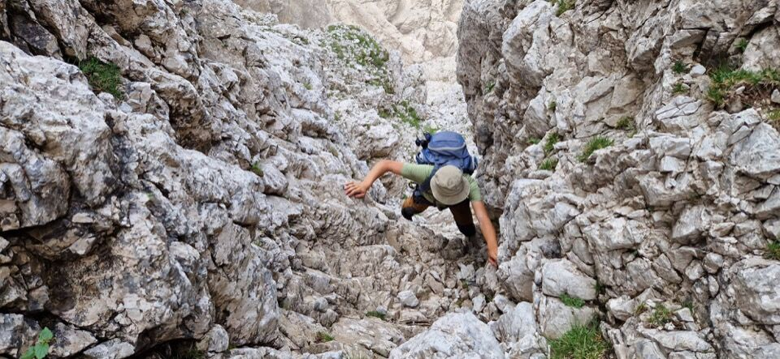
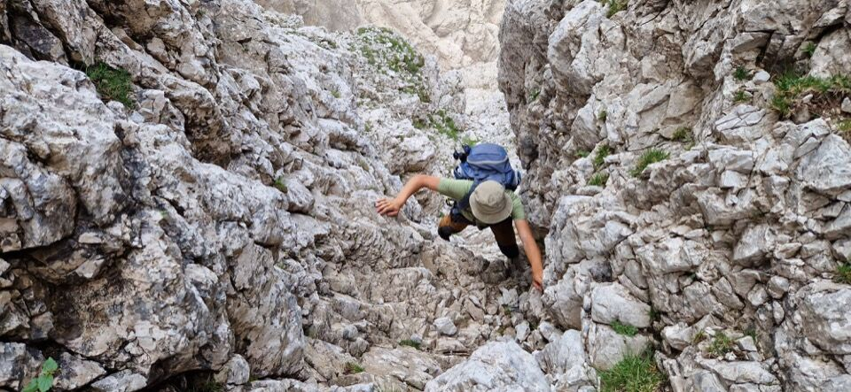

Deciso all'ultimo, un giorno di luglio sono partito da ponte Confòz (val Cimoliana) alla volta della Cuviéra, con l'idea di percorrere la Covaràta; una macchina targata Padova alla partenza e poi il sentiero pieno di omini e piegature appena fatte mi ha subito fatto capire di avere davanti Luca Basso. Entrato in val Bevidór lo vedo dall'altra parte della valle, riusciamo a sentirci e mi aspetta. Interrogato sui suoi propositi, entusiasta anche se con un po' di timore mi unisco. Ne uscirà un bellissimo anello di grande soddisfazione nei meandri delle Dolomiti Clautane. Naturalmente in questi posti si parte all'alba e si torna al tramonto (se va bene).
Entrare a Cimolais e in val Cimoliana mi emoziona sempre: impossibile restare indifferenti dinnanzi alle imponenti e altissime canne d'organo della Vacalizza. Un sogno!

Parto all'alba da ponte Confòz: qui in foto le Ciazze Alte...

...e qui il Turlón.


Bellissimo il tratto di cengia a piombo su ponte Góte.

Mica male mi va: Luca è partito in piena notte e io mi ritrovo il sentiero pieno di omini!

Entro in val Bevidór.

Ecco laggiù Luca!


Si entra in val Gaiór: che spettacolo cima Giaéda.


Ad una certa deviamo per salire verso la Busa dei Viéres...

...luogo sperduto che probabilmente non ha eguali in Friuli, racchiuso fra le impressionanti pareti della costa Spalaviér e di Punta Susàna.


L'intento originario di Luca era di esplorare un canale che dalla Busa dai Viéres porta fino in cresta vicino Punta Susàna; c'è pure un doppio canale che dalla Busa porta al forcellino fra la Costa e la Cima Spalaviér, ma di questo Luca sapeva già che non fosse percorribile, per averci provato la settimana prima.

Ci proviamo... ma dopo un paio di passaggi impegnativi, ci tocca desistere: impossibile passare.


Aggiunta successiva: impossibile passare? Mi vien da ridere! Luca Basso, che ne sa una più del diavolo, il sabato dopo è tornato lì e il giorno dopo mi manda il messaggio «Sabato sono riuscito a risalire il canale che avevamo provato la settimana scorsa. Sono entrato più in alto di lato. Bello tosto e più difficile di quello che sale in f.lla dei Vieres.»!
Dopotutto Luca, settimane fa, mentre si trovava nel catino Ovest racchiuso fra cima Spalaviér e Punta Susàna, aveva visto un camoscio scendere in direzione della Busa, quindi un modo per passare da lì alla Busa c'era sicuro. Così, per evitare la prima parte del canale assolutamente impraticabile, il sabato dopo ha rimontato una parte della difficile cresta Nord-Ovest di Punta Susàna, per poi immettersi tramite una cengia nel fondo del canale, che ha salito fino al "falso Tac de Tunìn" con passaggi privi di appigli dove "o si sale o si sale perché da qui non riesco più a girarmi". Mi dice che probabilmente i camosci evitano tali passaggi di lato lungo paretine e cengette da brivido.
Senza parole! Qui sotto una foto fatta da Luca dalla cresta Nord-Ovest di Punta Susàna, con il canale in centro foto.
Tornando a noi, decidiamo allora di andare a prendere la III° cengia, direttamente da dove origina e non tramite la II° cengia, come "solitamente" si fa.
Qui in foto le torri q1782 e q1952 (facenti capo alla costa Spalaviér), sotto cui è transitato Luca anni fa seguendo un bel tratturo di camosci.


Costa e cima Spalaviér, con il forcellino che raggiungeremo molte ore più tardi.
Come dicevo prima, il canale che da quel forcellino scende alla Busa non è percorribile (a meno di arrampicata di alto livello).


Immensa e magnifica cima Giaéda.

Non mancano passaggi impegnativi alquanto esposti...

...ma è uno dei più begli ambienti che abbia mai visto.

Decidiamo di non terminare la III° cengia, ma di provare a salire il canale Ovest che fa capo alla forcella dei Viéres.
La Berti recita: «Si sa che i cacciatori di camosci da V. Cimoliana, portatisi alla Cuviéra, volgono a sin. entro la Busa dei Viéres e di là per cenge si portano in forc., ma non si hanno notizie più precise.»
Si sa anche che S. Degan e compagni nell'83 sono scesi per il suddetto canale, fino ad intercettare la II° cengia; dal libro di vetta sembra che nel 2012 un tale Luigi di Padova abbia salito il suddetto canale, partendo (incredibilmente) dalla val Settimana, salendo alla Fessura dal ciol de Giaéda per poi andare a prendere la II° e la III° cengia!
Comunque di informazioni sulle difficoltà del canale non ne abbiamo: ci proviamo e sperin ben.
Il canale diventa presto impraticabile e bisogna aggirare i salti: unico modo un canalino con attacco di III+ su buona roccia.


 

Uno sguardo indietro: in centro foto una bellissima cengia (la IV° cengia?), il cui attacco dal canale però è riservato solo ai camosci.

Finalmente in vista della forcella dei Viéres, che sollievo!

Le bellissime cenge che fasciano il versante Ovest della cima... vuoi non andare?

Luca decide di provarci: realizzerà così una salita totalmente in versante val Cimoliana.


Io, che ora mi mangio le mani, invece salgo in cima per i Pàscoi dei Peròns Alz in versante Settimana... dove poco dopo vedo sbucare Luca in cresta. È fatta!


Cima Giaéda.

Torniamo alla forcella: in foto Punta Susàna che dobbiamo raggiungere.

Il canale secondario che scende al ciol de Susàna.


Dalla Punta Susàna verso la Busa dei Viéres: evidenti le torri q1782 e q1952.

La cima Spalaviér.

Cima dei Viéres: impressionanti se viste da qui le cenge Ovest superiori!

Scendiamo verso il Borsàt.


Ma che fatica salire al Forzèl Tramontìn.


Di là la costa Spalaviér.

Borsàt versante Ovest.

La strada è ancora lunghissima.


Impressionanti le belle cenge Ovest della cima Spalaviér, sopra l'inquietante vuoto che s'intuisce sopra la Busa dei Viéres.

Andiamo giù per la costa, con zig-zag infinito, lungo un percorso conosciuto da Luca.

Spiegazioni...


Il Turlón con la Punta della Ventola.


Finalmente sul ciol Tramontìn, ormai a sera.

Chiudo il racconto così come l'ho aperto, con uno sguardo romantico sulle crode della Vacalizza.

Foto e tracciato di Luca Basso, con indicata la parte finale della via: «ora anche i cimoliani hanno una loro via di salita ai Viéres!»

NB: su notizia di Pietro Grava, riporto ciò che segue: il Tac de Tunìn, che la guida Berti assegna all'alta forcella fra Punta Susàna e cima Spalaviér, in realtà indica un luogo intorno a q1900 nel ciol de Susàna, una sorta di allargamento con prati verdi e tacche (Tac) rocciose.
La forcelletta fra le due cime non ha un nome: già il fatto di considerarle due cime distinte è un po' una forzatura.